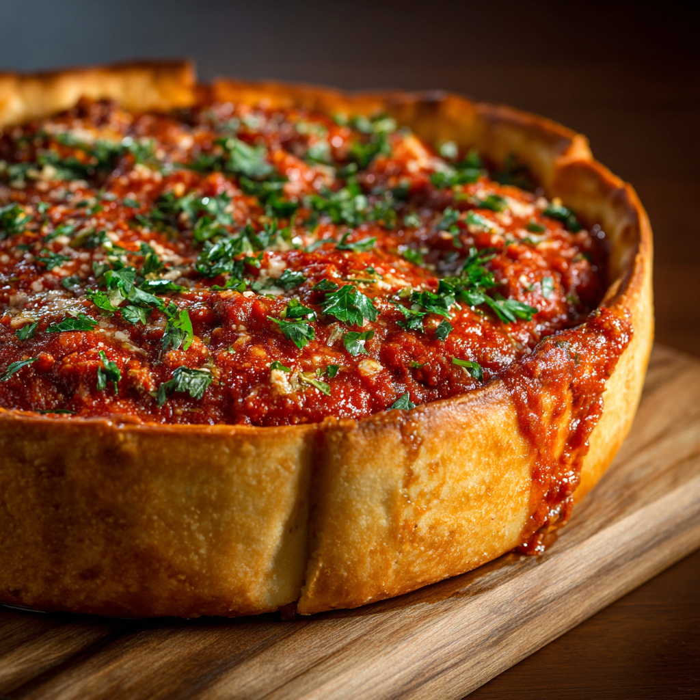

Chicago Style

Chicago-style pizza is famous for its deep dish crust, thick layers of cheese, and chunky tomato sauce on top. It’s baked in a tall pan and served as a hearty meal.
History
Chicago deep dish pizza was developed in the 1940s and quickly became a defining food of the city. Its thick crust and reversed layering method were designed to create a filling, knife-and-fork experience.
Why It’s Different
Unlike thinner styles, Chicago pizza focuses on structure. The tall crust holds heavy toppings, and the tomato sauce sits on top to prevent the cheese from burning during the longer bake time.
Key Features
- Deep, buttery crust
- Cheese layered directly on dough
- Tomato sauce on top